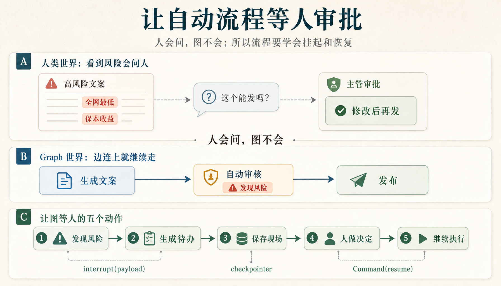
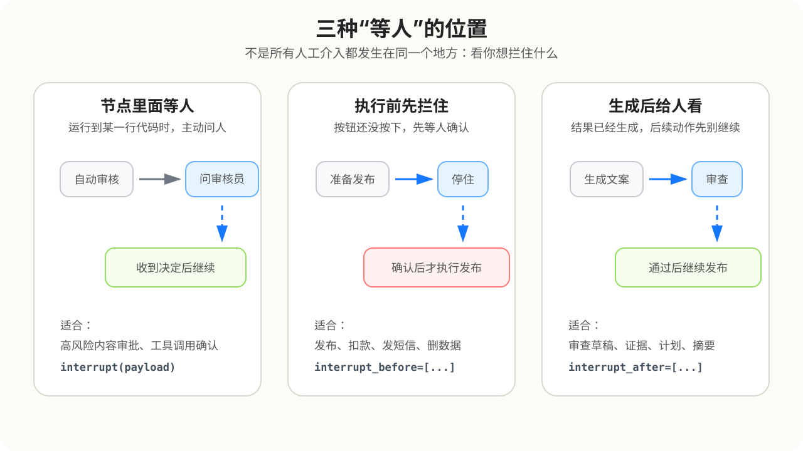

不是让模型少做事，而是让模型生成、判断、准备动作之后，危险动作必须等人确认。

人看到风险会停下来找负责人；Graph 默认只会沿着边继续走。HITL 要把“问一下人”拆成可恢复的机器动作。
| 场景 | 人在哪里介入 | 适合什么时候用 |
|---|---|---|
| Node 级 HITL | 自定义 StateGraph 的某个节点里 interrupt() | 你需要完整控制 state、router、审计日志 |
| Agent 级 HITL | Agent 准备调用 tools 前 interrupt_before=["tools"] | 你用预构建 Agent，但要拦住危险工具调用 |
| Wrapper 级 HITL | 把危险 tool 包一层，在 wrapper 里 interrupt() | 多个 Agent / Graph 都会调用同一个危险能力 |
这是最白盒的做法。你自己写 StateGraph，所以 state、节点、router 和审计日志都能被学生逐行看见。
输入发布请求 → LLM 生成文案 → LLM / 规则做风险审查 → 高风险暂停给人 → 人回复 → 继续发布或拒绝
generated_draft：LLM 生成的文案risk_level / risk_score：审查结果review_decision：人工回复final_content / publish_status：最终结果audit_log：节点动作链路文案生成提示词 → 只负责生成 draft 风险审查提示词 → 只负责返回 risk_level、risk_score、risk_reasons、needs_human_review
{
"request_id": "campaign_high_001"
}
{
"任务类型": "内容发布审批",
"风险等级": "高风险",
"审核员可以选择": [
"approve",
"edit_and_approve",
"reject"
]
}
Graph 没有失败，它停在 human_review，等待审核员提交决定。
Command(resume={
"decision": "edit_and_approve",
"reviewer_id": "reviewer_demo_001",
"comment": "删除绝对化和收益承诺表达后发布。",
"revised_draft": "618 智能空调活动开启..."
})
{
"发布状态": "修改后发布",
"审核决定": "修改后通过",
"最终发布文案": "618 智能空调活动开启..."
}
人工回复写入 state，router 再选择发布或拒绝。
用户说：帮我发布这条内容 Agent 思考：我需要调用 publish_to_channel 系统暂停：这个工具会真的发布，先给人确认 人确认后：工具才执行
create_agent( model=agent_model, tools=[publish_to_channel], checkpointer=MemorySaver(), interrupt_before=["tools"], )
这种方式拦的是 Agent 即将调用工具这个动作。
{
"name": "publish_to_channel",
"args": {
"content": "...",
"channel": "公众号"
}
}
tools 节点会执行真实发布动作。interrupt_before 让工具调用前先暂停。tool_call 执行。Agent 级拦截依赖调用方真的进入 tools 节点。生产里更稳的做法是：危险能力自己先请求人工确认。
调用方准备发布参数 → wrapper 先 interrupt → 人看 tool args → approve 后才调用真实 publish_service
{
"action": "approve_tool_call",
"tool": "publish_with_human_gate",
"channel": "短信",
"content": "会员日活动提醒...",
"options": ["approve", "edit_and_approve", "reject"]
}
{
"status": "published",
"channel": "短信",
"content": "会员日活动开启...",
"human_decision": "edit_and_approve"
}
审批可能几分钟后回来，也可能第二天才回来。系统不能让请求、线程、连接和进程一直占着资源等人。
运行到风险点 → 生成待办 → checkpoint 保存 thread、暂停点、state/messages → 当前请求结束，释放资源 → 人提交决定 → Command(resume=...) 恢复
interrupt() 塞进一个大节点里生成文案 → 调外部 API → 写数据库 → interrupt 等人 → 发布
恢复时，LangGraph 会从当前节点开头重新执行。
生成文案节点 → 风险审查节点 → 人工审批节点 → 发布节点
人工审批节点只准备 payload、接收 resume、写回 state。

这三种方式不是谁替代谁，而是拦截位置不同。
Human-in-the-loop 是给 Agent 系统加一条安全边界：模型可以生成、判断、计划、准备 tool_call，但高风险动作真正发生前，必须有人确认。
| 你需要 | 选择 |
|---|---|
| 完整业务状态和路由 | Node 级 HITL |
| 拦住预构建 Agent 的工具调用 | Agent 级 HITL |
| 让危险工具全局不漏审 | Wrapper 级 HITL |